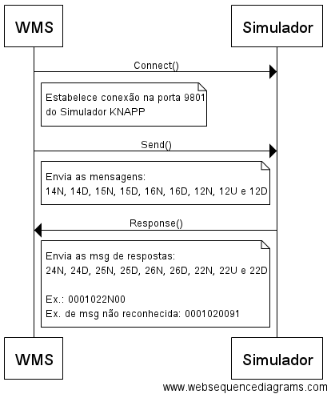

WmsToWcsServerSimulator Service¶
Serviço responsável por simular o envio de mensagens do WMS HighJump para o WCS KNAPP. Este serviço nada mais faz do que responder com sucesso ou falha as mensagens recebidas. Veja o fluxo abaixo para melhor entendimento.
Fluxo¶
Configuração¶
Requisitos mínimos:
- Windows Server 2012 R2 - 64bit
- .NET Framework v4.6
- 4GB de RAM
- Intel Xeon 2.60GHz
Ambientes e Servidores:
| Servidor/IP | Função | Ambiente |
|---|---|---|
WINDHTKNAPPGW |
Servidor de Aplicação | HOMOLOGACAÇÃO |
WINDHTSQLCDN02\HCDNHJS |
Servidor de Banco | HOMOLOGACAÇÃO |
Localização dos arquivos no servidor de aplicação:
C:\Servicos\WmsToWcsServerSimulator
Parâmetros disponíveis no App.config:
| Parâmetro | Descrição | Valor Default |
|---|---|---|
appSettings/WCS-PORT |
Porta TCP/IP de envio e recebimento | 9801 |
appSettings/BUFFER-SIZE |
Tamanho maximo para leitura e escrita de mensagens | 12000 |
Nota
É necessário efetuar o stop e start do serviço após qualquer ajuste nas configurações
Instalação/Desintalação¶
Instalar:
C:\Servicos\WmsToWcsServerSimulator\WmsToWcsServerSimulator.exe install
Desinstalar:
C:\Servicos\WmsToWcsServerSimulator\WmsToWcsServerSimulator.exe uninstall
Nota
Execute o prompt como ADMINISTRADOR
Execução¶
Start:
C:\Servicos\WmsToWcsServerSimulator\WmsToWcsServerSimulator.exe start
Stop:
C:\Servicos\WmsToWcsServerSimulator\WmsToWcsServerSimulator.exe stop
Nota
Execute o prompt como ADMINISTRADOR
Monitoramento¶
Toda troca de mensagens é registrada em arquivo texto de log.
Localização do log em arquivo texto:
C:\Servicos\WmsToWcsServerSimulator\logs\YYYY-MM-DD.log
É possível visualizar o log em tempo real por meio do Sentiel Viewer:
- Abra o Sentinel e crie uma nova session
- Escolha o provider
NLog Viewer Provider- Em seguida o protocolo
UDPe porta9988
Nota
- Detalhes de configuração do mecanismo de log estão localizados no arquivo NLog.config. Após qualquer ajuste é necessário efetuar o stop e start do serviço
- Limpeza do log: Arquivos com mais de uma semana, serão excluídos